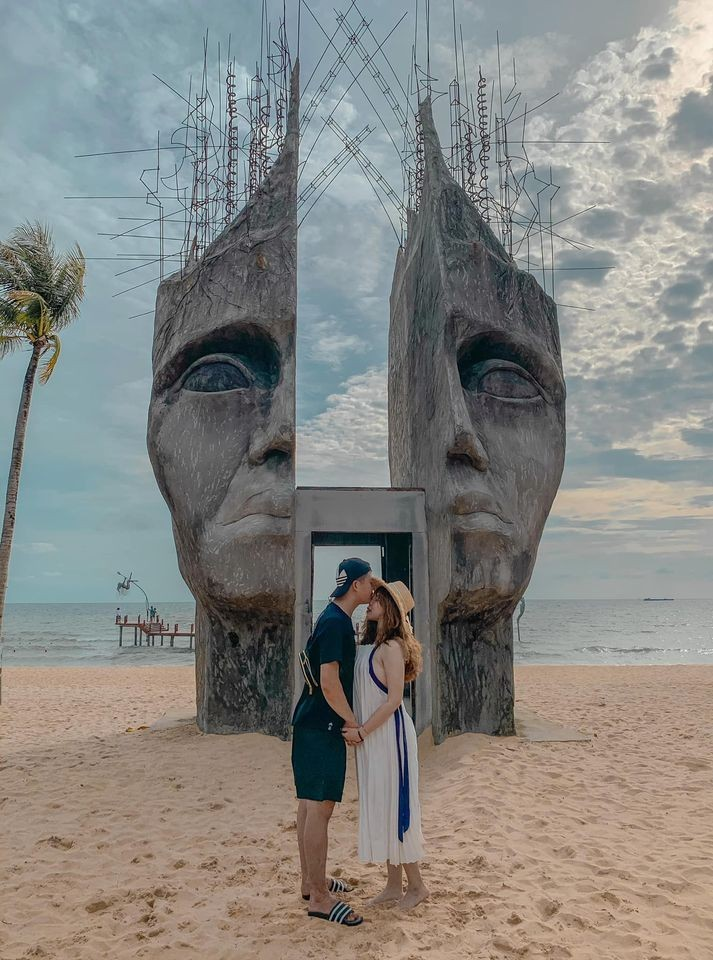

Nằm trong vịnh Thái Lan cách Hà Tiên 50 km và cách Rạch Giá 120 km trên đất liền, Phú Quốc có diện tích 600 km2 - 48 km từ Bắc Nam và 19 km từ Đông Tây - nó gói gọn rất nhiều trong một không gian nhỏ! Hình dạng của Đảo giống như một “giọt nước mắt”, rộng
nhất ở phía trên ở phía bắc và hẹp ở phía dưới ở phía nam. Chạy dọc theo bờ biển phía Tây là Bãi Dài nổi tiếng, nơi có nhiều khu nghỉ dưỡng và nhà hàng và là địa điểm hoàn hảo để đón hoàng hôn Phú Quốc tuyệt vời , vì bãi biển chạy dài
gần một nửa chiều dài của hòn đảo, bạn không nên vất vả tìm kiếm một nơi yên tĩnh.
...
Trong khi Bãi Dài chiếm ưu thế ở bờ biển phía tây, ở phía bắc Công viên Quốc gia và các khu vực nông thôn là những điểm thu hút chính với những con đường mòn đi bộ đường dài, thác nước và động vật hoang dã tuyệt vời đang chờ đợi những người có cảm giác mạo hiểm mạnh mẽ!
Bốn hòn đảo nhỏ hơn ở phía nam tạo nên Quần đảo Phú Quốc một ngày tuyệt vời với các chuyến đi lặn và lặn với ống thở là những chuyến du ngoạn phổ biến đến những hòn đảo xa xôi của họ. Nhiệt độ hiếm khi xuống dưới 250C (770F
) vì vậy bất kỳ thời điểm nào trong năm đều là thời điểm thích hợp để đến, tuy nhiên có một số khác biệt về thời tiết trong năm, đáng chú ý nhất là giữa mùa ẩm và mùa khô.Hằng năm mùa khách du lịch cao điểm từ tháng 11 đến tháng 3, Phú
Quốc đang trở nên nổi tiếng với những bãi biển tuyệt đẹp, mặt trời to lớn với ánh hồng của Hoàng Hôn rực rỡ, môi trường tự nhiên hoang sơ, bầu không khí bình dị và thoải mái, những người dân địa phương thân thiện, những chuyến
đi lặn biển ngắm san hô tuyệt vời. Phần lớn đảo Phú Quốc được dành riêng cho Vườn Quốc gia và môi trường biển được bảo vệ, mang đến một trải nghiệm đáng nhớ với nhiều hoạt động thú vị và những nơi thú vị để bạn viếng thăm giúp bạn và
gia đình vui chơi trong suốt thời gian lưu trú.
...
Lời khuyên của chúng tôi: Hãy đến thăm vào tháng 11 đến tháng 4 khi bầu trời trong xanh, nước biển trong xanh và khả năng lặn tốt nhất!

Bắt đầu cuộc phiêu lưu của bạn
Hãy khám phá phú quốc cùng travel phu quoc
Đi đến những chân trời mới, trải nghiệm những điều thú vị, tận hưởng những khoảnh khắc tuyệt vời.